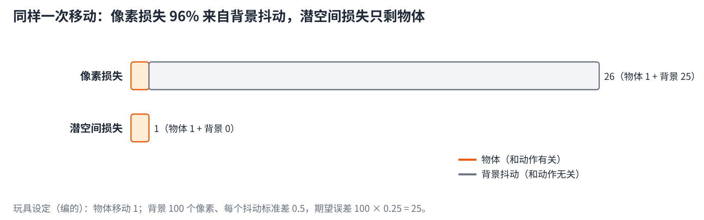
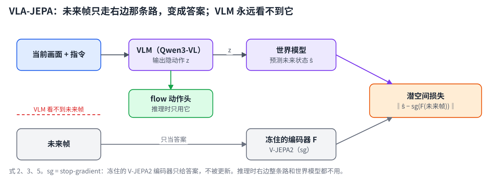
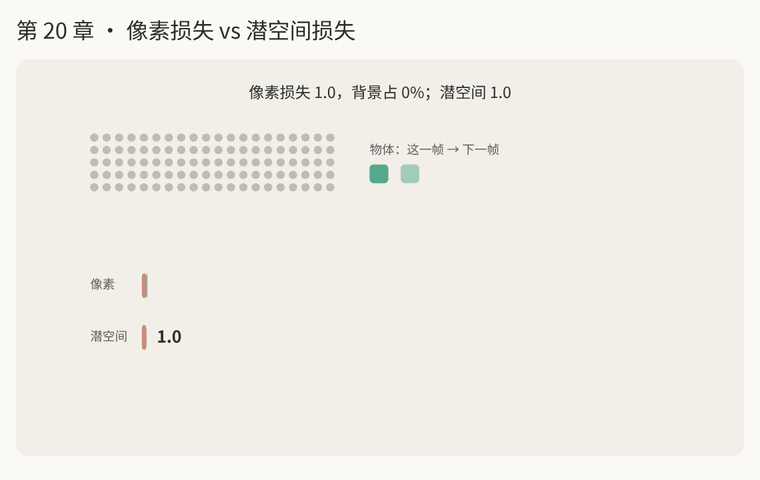

第 20 章 · 潜空间世界模型：VLA-JEPA，看视频学"世界怎么变"，但别偷看答案
本地运行
git clone https://github.com/wikieden/vla-from-scratch
cd vla-from-scratch/code/notebooks
pip install jupyterlab torch numpy
jupyter lab ch20_latent_world_model.ipynb也可以下载后直接用 VS Code 打开 .ipynb 运行。需要 GPU 的章节在 Colab 里选「代码执行程序 → 更改运行时类型 → GPU」。
本章回答：第 11 章的隐动作从两帧画面里猜"发生了什么"，为什么常常学成了"背景怎么变"或者"把下一帧抄下来"？VLA-JEPA 只在潜空间里预测未来、未来帧只当答案不当输入，换来了什么？推理时还要不要这个世界模型？
讲解日期：2026-11-24 · 上一章：第 19 章 评测 · 下一章：第 21 章 2026 开源 VLA
对应原文：materials/text/papers/vla-jepa-2602.10098.txt（下称 JEPA）摘要 L11–L22；四种失败 L78–L118；§3.2 L203–L296（式 1–5）；§3.3 L297–L320（式 6–9）；§4.1 L452–L462；表 1 L334–L352；表 3 L444–L455；§4.5 L505–L545；LeRobot 实现materials/code/lerobot/repo/src/lerobot/policies/vla_jepa/README.md
本章缩写：JEPA = Joint-Embedding Predictive Architecture（联合 / 嵌入 / 预测 / 架构）；V-JEPA2 = Video JEPA 2（视频版第 2 代）；VQ-VAE = Vector-Quantized Variational AutoEncoder（向量 / 量化 / 变分 / 自编码器）；ELBO = Evidence Lower Bound（证据 / 下界）；EMA = Exponential Moving Average（指数 / 移动 / 平均）；WM = World Model（世界模型）；FM = Flow Matching；SSv2 = Something-Something v2（人手操作视频数据集）；DiT = Diffusion Transformer。全表见 appendix-glossary.md
讲解
第 1 步：从视频学，容易学偏（2026-11-24）
类比：看别人做菜的视频学做菜。 好学生盯着手怎么切、锅里怎么变；差学生被镜头晃动、背景里走过的人、灯光变化吸引走了，学了一堆和做菜无关的东西。还有一种更糟的：边看边偷看下一帧，直接把下一帧"背"下来，根本没学会动作。
第 11 章说过，没有动作标签的视频很多，可以先从相邻两帧里学一个"隐动作"。JEPA 论文总结了这条路上反复出现的四种失败（L78–L118）：
| 失败 | 怎么回事 |
|---|---|
| ① 盯着像素 | 用"预测未来像素"或"压缩两帧差"当目标，监督信号被纹理、光照、背景、视角这些变化大但和控制无关的东西主导 |
| ② 被噪声运动带跑 | 人拍的视频里，相机晃动、背景里的变化常常比手的动作还大，隐动作变成"相机怎么晃" |
| ③ 信息泄露 | 学隐动作的模块同时看到现在和未来，于是隐动作直接把未来编码进去，"动作"变得没有意义 |
| ④ 流程又长又脆 | 为了补救，搞成"表示预训练 → 隐动作学习 → 策略学习"三段甚至更多，段与段对不齐 |
一句话：从视频学动作，容易学成"背景怎么变"或"把答案抄下来"。
第 2 步：在潜空间里比，像素噪声就少了（2026-11-24）
类比：考"菜做成什么样"，不考"每个像素什么颜色"。 换个盘子、换个灯光，菜还是那道菜。先用一个"懂菜"的人把画面翻译成描述，再比描述。
JEPA 的做法（式 1、5，L224–L296）：
- 一个冻住的视频编码器 \(F\)（V-JEPA2）把每一帧翻译成"世界状态" \(s_t = F(I_t)\)，多视角就拼起来；
- 世界模型根据过去的状态和隐动作，预测下一段的状态 \(\hat s\)；
- 损失在潜空间里算，不在像素上算：
\(\mathrm{sg}\) = stop-gradient（不让梯度流回编码器），因为 \(F\) 是冻住的老师（L277–L284）。\(F\) 已经在大量视频上学会"什么是重要的变化"，像素级的小抖动在它的表示里被压得很小。
例（数是编的，演示比例）：一帧画面 = 1 个"物体位置"数 + 100 个背景像素。两帧之间物体移动了 1，背景每个像素因为相机抖动随机变化（标准差 0.5）。
| 比什么 | 物体那部分的误差 | 背景那部分的误差 | 背景占比 |
|---|---|---|---|
| 像素（101 个数都比） | \(1^2 = 1\) | \(100 \times 0.5^2 = 25\) | 96% |
| 潜空间（编码器只留物体） | 1 | ≈ 0 | ≈ 0% |
用像素损失，模型 96% 的力气花在猜相机怎么抖上。

图 20-1 · 同样一次移动，像素误差里绝大部分来自背景抖动。
一句话：先翻译成"世界状态"再比，比的就是真正和动作有关的变化。
第 3 步：未来只当答案，不当输入（2026-11-24）
类比：考试时答案纸压在桌上。 如果学生能看见答案纸，他的"答卷"可以写得和答案一模一样，但他什么都没学会。
泄露是怎么发生的（失败 ③，L99–L110）：很多隐动作方法把"现在 + 未来"两帧一起送进同一个模块，让它输出隐动作 \(z\)，再用 \(z\) 重建未来。只要 \(z\) 的容量够大，最省事的解就是把未来帧直接压进 \(z\)，重建误差可以降到 0，但 \(z\) 和动作无关。
JEPA 的防法（L86–L97）：
- VLM 只看当前的多视角画面和指令，输出隐动作 token 的表示 \(z\)（式 2）；
- 未来帧只进冻住的编码器 \(F\)，变成损失里的答案 \(s_{t_k}\)，从不作为输入；
- 世界模型用 \(z\) 和过去的状态去猜未来状态（式 3）。
这样，\(z\) 想让损失变小，只能真的编码"接下来世界会怎么变"。
两段训练，一段推理（§3.3 L297–L320、§4.1 L452–L462；LeRobot README）：
| 阶段 | 数据 | 损失 | 用到世界模型吗 |
|---|---|---|---|
| 预训练 | 人手视频 SSv2（22 万条，无动作标签）+ DROID（7.6 万条机器人轨迹） | 视频：\(\mathcal{L}_{\text{WM}}\)；机器人：\(\mathcal{L} = \mathcal{L}_{\text{FM}} + \beta\mathcal{L}_{\text{WM}}\)（式 9） | 用 |
| 微调 | 目标任务的机器人示范 | 同上 | 用 |
| 推理 | — | — | 不用：只用 Qwen3-VL 主干 + DiT-B flow 动作头 |
动作头是第 8 章的 flow matching（式 7–8 和 π0 写法一样：\(a_t = (1-t)\epsilon + t\,a\)，目标速度 \(a - \epsilon\)）。世界模型只在训练时当"陪练"，推理时不想象未来，这和《世界模型与 WAM 流派》第 5 章 Fast-WAM 的结论"训练时想象、推理时不想象"是同一个方向。

图 20-2 · 未来帧只走右边那条路，变成答案；VLM 永远看不到它。
场景代码：LeRobot 里加载 VLA-JEPA 推理（modeling_vla_jepa.py L383 的 VLAJEPAPolicy、L558 的 select_action；README：推理时只用主干和动作头）：
from lerobot.policies.vla_jepa.modeling_vla_jepa import VLAJEPAPolicy
policy = VLAJEPAPolicy.from_pretrained(ckpt_dir) # 从 ginwind/VLA-JEPA 转成 LeRobot 格式的 checkpoint 目录
policy.eval()
action = policy.select_action(batch) # batch：当前相机图 + 指令 + 状态；不需要未来帧，也不跑世界模型
一句话：答案纸只给老师看；推理时陪练下场，只剩主干和动作头。
第 4 步：人手视频到底帮了什么（2026-11-24）
把人手视频从预训练里拿掉做对比（表 1、表 3，§4.5 L505–L545）：
| 基准 | 有人手视频 | 去掉人手视频 | 差 |
|---|---|---|---|
| LIBERO 平均（每套件 500 回合） | 97.2% | 96.1% | 1.1 |
| LIBERO-Plus 平均（七种扰动） | 79.5% | 62.9% | 16.6 |
LIBERO-Plus 各扰动维度里差距最大的：相机角度 63.3 vs 40.3、背景 93.6 vs 70.5、噪声 66.3 vs 38.2。
作者的解释（L520–L545）：人手视频里没有机器人动作的轨迹，学不到"怎么动"的新本领；它带来的是稳：同样的抓取，换了相机、背景、光照还能做出来。就像看视频学技能，第一次照着做多半不成，练过之后，看过的东西让你在各种环境里都更稳。
用第 19 章的眼光看：LIBERO 上 1.1 个点的差（各 2000 回合）分不出高下；LIBERO-Plus 上 16.6 个点，才是真的差距。
一句话：人手视频不教新动作，教的是换了环境还能稳住。
动画演示：像素损失 vs 潜空间损失

可交互版：animations/20-latent-world-model.html（滑块：背景抖动标准差 0–1、背景像素数 10–400、物体移动 0–2；勾选：编码器看得到未来帧）。
怎么看：
- 上面两帧，青色方块是物体，灰色点是背景（第 2 步）；
- 两根横条是像素损失和潜空间损失的组成，橙色 = 物体部分、灰色 = 背景部分；
- 勾选"看得到未来帧"，隐动作直接抄未来，重建误差降到 0，但和物体移动多少无关（第 3 步）；
- 播放：没有抖动 → 抖动 0.5 → 背景 400 像素 → 打开泄露。
练习与作答记录
题 1（第 2 步）：背景 50 个像素、抖动标准差 0.4，物体移动 2。像素损失里背景占百分之几？如果背景像素加到 200 个呢？
作答记录：（待作答）
题 2（第 3 步）：一个隐动作模型把"当前帧 + 下一帧"一起编码成 64 维的 \(z\)，下一帧画面压缩后也只要 64 维就能存下。训练损失很低，但下游策略用不上 \(z\)。用"答案纸"的说法解释为什么。
作答记录：（待作答）
题 3（第 4 步）：表 1 里 VLA-JEPA 97.2%、OpenVLA-OFT 97.1%（各 2000 回合）。能说 VLA-JEPA 在 LIBERO 上更强吗？要证明"人手视频有用"，你会看哪张表的哪几列？
作答记录：（待作答）
口诀
看视频学做菜，别学镜头怎么晃；
先翻译成"菜什么样"再比，像素抖动就不算数；
答案纸只给老师看，学生只看现在；
推理时陪练下场；人手视频不教新招，教你换个地方也稳。
本章复习卡片
V47（隐动作四种失败：盯像素、噪声运动、信息泄露、多段流程；JEPA 潜空间损失 + stop-gradient）、V48（未来帧只当答案不当输入；\(\mathcal{L} = \mathcal{L}_{\text{FM}} + \beta\mathcal{L}_{\text{WM}}\)；推理不用世界模型；LIBERO-Plus 79.5 vs 62.9）。练习做完后，按答错、卡住的地方再补。
附录 · 延伸阅读
留给以后深入学习用，不影响本章主线。★ 是建议先读的。
推荐阅读
| 读什么 | 读哪里 | 读它为了什么 |
|---|---|---|
| ★ VLA-JEPA（Sun 等，2026） | vla-jepa-2602.10098.txt §1、§3、§4.5 |
本章原文 |
| 第 11 章 隐动作与世界模型 | LAPA、Genie | 本章要修的那条路 |
| 《世界模型与 WAM 流派》第 5 章 | Fast-WAM | 推理时要不要想象 |
| 《世界模型与 WAM 流派》第 9 章 | 隐动作的几种做法 | 横向对比 |
| LAPA | lapa-2410.11758.txt |
JEPA 表 1 里 65.7% 的那个基线 |
| V-JEPA 2（Meta，2025） | 本地无原文 | 冻住的编码器 F 从哪来 |
数学原理
- 期望平方误差可加：各维度独立时，总误差 = 各维误差之和；100 个方差 0.25 的背景像素贡献 25。
- stop-gradient：前向照常算，反向时把这一支的梯度当 0；用来防止"老师"和"学生"一起往一个平凡解塌缩。
- ELBO 退化成重建：编码器给的是确定的嵌入时，式 4 里的 KL 项消失，只剩潜空间里的重建误差（L284–L286）。
公式清单
| 公式 | 意思 |
|---|---|
| \(s_t = \Vert_v F(I_{v,t})\) | 多视角拼成世界状态（式 1） |
| \(\hat s = p^{\text{WM}}(s_{t_0:i}, z_{t_0:i})\) | 世界模型预测下一段状态（式 3） |
| \(\mathcal{L}_{\text{WM}} = \sum_k \lVert \hat s_{t_k} - \mathrm{sg}(F(I_{t_k}))\rVert\) | 潜空间对齐损失（式 5） |
| \(\mathcal{L} = \mathcal{L}_{\text{FM}} + \beta\mathcal{L}_{\text{WM}}\) | 机器人数据的总损失（式 9） |
代码对照：把本章的数字用代码算一遍
纯 Python + NumPy。代码在仓库本地
vla-deep-dive/solutions/chapter-code/ch20_latent_world_model.py，配套测试tests/test_ch20.py：
bash cd vla-deep-dive/solutions/chapter-code uv run python ch20_latent_world_model.py uv run pytest tests/test_ch20.py
讲义 ↔ 代码：
| 讲义 | 写法 | 跑出来 |
|---|---|---|
| 第 2 步 | expected_pixel_loss(move, n_bg, sigma)、latent_loss(move) |
像素 26（背景 25，占 96%）；潜空间 1 |
| 第 2 步 | simulate_losses(...) |
随机抽样后接近 26 和 1 |
| 第 3 步 | leaky_reconstruction(...) |
看得到未来时误差 0，和动作无关 |
| 第 4 步 | JEPA_TABLES |
97.2 vs 96.1；79.5 vs 62.9 |
代码里才看得到的 3 件事：
simulate_losses里的预测用最朴素的"下一帧和这一帧一样"：物体那项误差是移动量的平方，背景那项全是猜不到的相机抖动。像素损失里背景占大头，潜空间里背景被编码器丢掉了。leaky_reconstruction让隐变量直接等于下一帧；不管喂进去的动作是什么，重建都完美，这就是"答案纸"。- 编码器在代码里就是"只取物体那一维"，是最理想的 F；真实的 V-JEPA2 不会把背景压到正好 0。
自己改一改（不影响练习答案）：
- 把背景抖动改成"整体平移"（所有像素同加一个数），看像素损失怎么变。
- 给
latent_loss的编码器混入 5% 的背景信息，看潜空间损失里背景占多少。 - 用
two_prop_z（第 19 章）检验 97.2% vs 96.1%、79.5% vs 62.9%。